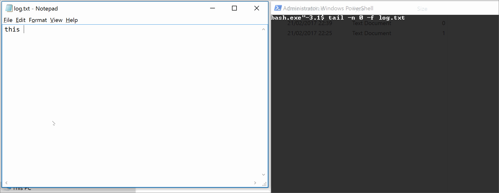
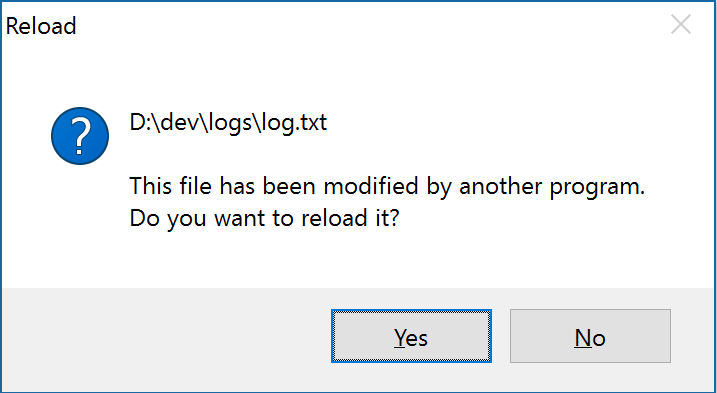

Working with logs in production is made really easy with solutions like the ELK stack, but working with logs locally can be really cumbersome.
For example, something like the configuration below is very typical for local development;
<?xml version="1.0" ?>
<nlog xmlns="http://www.nlog-project.org/schemas/NLog.xsd"
xmlns:xsi="http://www.w3.org/2001/XMLSchema-instance">
<targets>
<target name="file" xsi:type="File"
layout="${longdate} ${logger} ${message}"
fileName="${basedir}/logs/logfile.log"
keepFileOpen="false"
encoding="iso-8859-2" />
</targets>
<rules>
<logger name="*" minlevel="Debug" writeTo="file" />
</rules>
</nlog>
Typically we double click on the file, close, refresh and repeat.
Well below are a couple of really simple but effective solutions in working with log files.
1. Windows explorer preview pane
- Open windows explorer.
- View -> Preview Pane
- Select the log file.
Great thing is the preview pane refreshes the output everytime the file changes. If the preview pane doesnt show you the log file content its typically because the file extension isn't mapped to a content type.
Windows Registry Editor Version 5.00
[HKEY_CLASSES_ROOT\.log]
@="txtfile"
"Content Type"="text/plain"
"PerceivedType"="text"
Simply copy the above and save the file using the .reg file extension. Double click and the key will be added to the registry settings. Try highlighting the file again.
Only problem is the preview pane doesnt show the tail. But that's fine as typically in local development I archive and overwrite the log. In some cases this isnt ideal obviously.
2. Bash console
$ tail -n 0 -f logfile.log

3. Notepad++
There are other text editors but notepad++ works best for me. However out of the box, after a change to the logfile you'l be presented with the following caption.

To enable silent reload of the log file. Settings -> Preferences -> MISC -> Update silently
NB. Notepad++ v6.9.2 introduces the tail command which scrolls to the EOF.
Click on eye icon on toolbar or use menu View->Monitoring (tail -f) to activate/disactivate this command
An honorable mention to the otroslogviewer project, but this is more of a power user tool and I have little use for it for local development.
Thanks for reading. Please share your thoughts and alternative approaches.